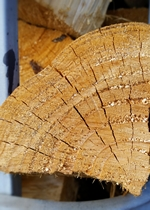

Seasoned Firewood
Our seasoned logs are very easy to burn and produce heat very rapidly. Typically, once lit, they will burn right through unattended. Unseasoned logs on the other hand, can be very difficult to light. They require lots of care and great effort must be taken to ensure prolonged combustion. Our logs are mainly suitable for use in enclosed surroundings, such as stoves, cookers, or enclosed fireplaces. If burning in an open fireplace, please make sure to use a full fireguard at all times. Although firewood is a solid fuel, it is carbon neutral. This means that our firewood logs are 100% exempt from ANY carbon tax